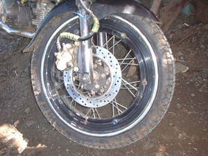

liggid 
/liggid/
n.
a wheel, tire
Ka liggid iyan ka ngaran te malibusen ne eggimuwen ne paa te terak, mutur, bangkalew wey keritun. Innimu ligkat te putew wey egpakaplian te guma eyew kenè egkareetan ka putew. Due lungag kayi te elat-elat ne egtiyukan te igbantal eyew kenè egpakalekè diyè te lawa. Kaayun ne kayu ka eggimuwen ne ligid wey kaayun ne guma. Amana ne impurtanti seini su emun ke warè ligid te terak, mutur wey ke bayk kenè egpekeyipanew.
Migbetu ka liggid te terak su natiyuk te lansang.
The wheel of a truck burst because it was pierced with a nail.
Mahal ka guma ne kayu su eggimuwen nahud ne liggid.
Rubber tree is expensive because it is making as tire.
Cult. Long ago this might have been called paa te terak "feet of the truck"
Eng. wheel; tire; tyre; rim
Tag. gulong
Ceb. ligíd
Online dict status: -
Usage level: L
Updated by: RJH,RAA,RJH
Last updated: 07/Sep/2017
"liggid" in reader "Nekey-a ka malibusen?"
This page last updated: 03-Jan-2020
Copyright © 2009-2014, Matigsalug Language Christian Association, Inc